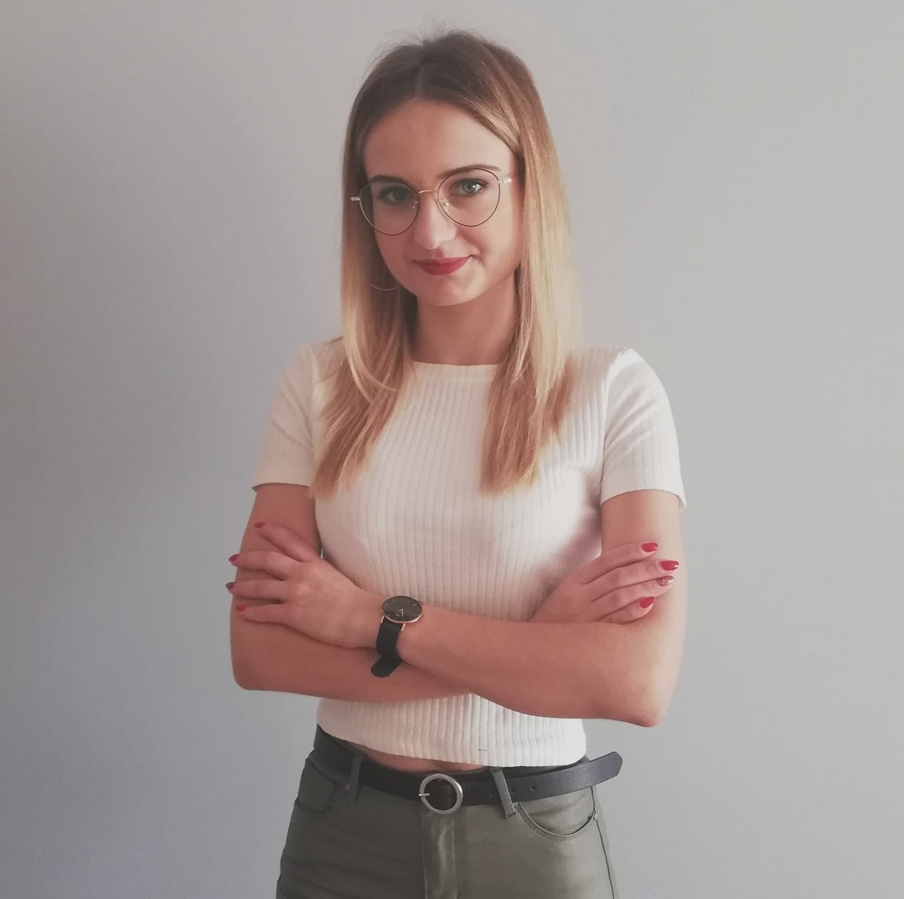

Cześć! Nazywam się Magda, chociaaż wszyscy do mnie mówią Madzia. Na co dzień pomagam ludziom, gdyż pracuje w aptece jako technik farmacji.
Jest to moje pierwsze wykształcenie, gdyż również posiadam tytuł dietetyka, który otrzymałam dwa lata temu kończąc studia pierwszego stopnia. Przejdź do zmiany.
Magda Konopka-strona domowa.
Coś o mnie?
Witam Cię serdecznie!
Skąd zainteresowanie programowaniem?
Programowaniem zaraził mnie mój chłopak Paweł, który na co dzień pracuje jako programista. To on pokazał mi na czym to polega i uświadczył w przekonaniu , że programistą może stać się każdy, kto chociaż trochę ma samozaparcia w sobie, a systematyczna nauka nie jest mu straszna. Dlatego też zaczełam brać udział w szkoleniu: WTF.
Czas na zmiany?
Nowy rok to dobry czas na postanowienia. Chociaż nigdy żadnych nie miałam, w tym roku postanowiłam zmienić zawód. Nie, że nie lubię swojej obecnej pracy, nic z tych rzeczy. Praca w aptece siedmiodniowej, od rana do wieczora zaczyna mnie męczy. Kiedy przychodzi weekend, rodzina i znajomi spędzają ze sobą czas, ja jestem nieobecna , bo musze być w aptece. Kwestia finansowa, to kolejny element nakłaniający do zmiany zawodu, no i oczywiście pacjenci, którzy są bardzo roszczeniowi, nie liczą się z Tobą, nie szanują Cię i poniżają, bo ty marny aptekarzyno jesteś zły, wszystkiemu winien, bo wykonujesz swoją pracę i przestrzegasz prawo, które Cię obowiązuje Ale mam w sobie wole walki i samozaparcie (schudłam ok. 20 kg), dlatego będę dążyć do tego by stać się programistką. Myślę, że uda mi się to osiągnąć.